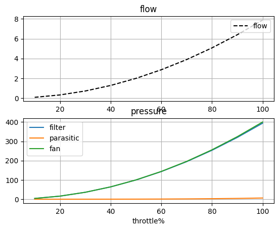
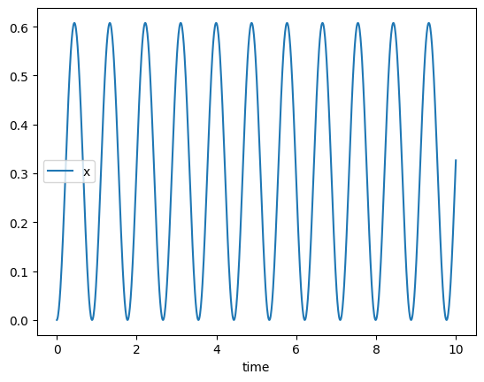

Welcome to engforge’s documentation!

EngForge
A library to tabulate information from complex systems with various ways to store data and act as glue code for complex systems & engineering problems.
Installation
pip install git+https://github.com/Ottermatics/engforge.git
Core Functions
Tabulation Of Complex Systems
Modular Post Processing (dataframes)
Exploratory Analysis (ipython + functions / docs)
Workflows for core engineering problemes (structures + cost, thermal+fluids solve)
MVP Features (WIP)
Tabulation, use
attrs.fieldandsystem_propertyto capturey=f(x)wherefieldsare the state from whichsystem_propertyderives results [Done]Dynamic Programing ensures work is only done when new data is available with
cached_system_property. [Done]Quick Calculation provided by direct cached references to attribues and properties [Done]
Solver based on
NPSSstrategy of balances and integrators [Done]Reporting to google sheets, csv and excel.
Systems & Analysis
Systems record data from components, and can execute a solver via the run(**parameter_iterables) command. Via a system’s run command its state and internal component’s & systems state can be altered in an outer product fashion, ie all combinations of inputs will be run. At the start of a run the systems & its components state is recorded and reset by default using Ref instances so that way multiple systems can use the same component. Its possible reference loops may occcur so its generally preferred to create components per system, however for coupled systems this is often desireable to converge on a solution.
By default the system calls a default_solver() method in its execute() function. A solver aims to drive its dependent parameter to zero by changing the independent parameters to zero, however it may adjust multiple parameters to meet multiple targets in more complex applications. For custom System behavior or to invoke custom solvers this method may be overriden.
To use the default solver & constraints
@forge
SolverSystem(System):
sol2 = Solver.define("dep", "indep")
sol2.add_constraint("max", limit_max) #indep should never go above this value (or function)
sol2.add_constraint("min", 0) #indep should never go below zero
Analysis is a pluggable way to provide different output and calculation from the same system and interacts with plot and table reporters.
Components, Signals & Slots
Component are able to be mounted into multiple Systems via SLOTS.define( ComponentType ). A Component’s properties can be updated via SIGNALS in the Systems’s solver in the pre_execute and/or the post_execute functions via SIGNAL.define(target, source, mode) where mode can be pre,post or both to update before the System.execute() method.
Iterable Components may be defined on a System via SLOT.define_iterable( <ComponentIter>, wide=True/False) to choose how the system should iterate over the component, wide mode provides all the component attributes and properties in the same row whereas the narrow mode will iterate over each combination of component as though it was input into system.run()
Example Engineering Problems:
These problems demonstrate functionality
Air Filter
run a throttle sweep with filter loss characteristic and fan afinity law based pressure based off of a design point.
from engforge.analysis import Analysis
from engforge.reporting import CSVReporter,DiskPlotReporter
from engforge.properties import system_property
from engforge import *
import numpy as np
import os,pathlib
import attrs
@forge
class Fan(Component):
n_frac:float = field(default=1)
dp_design:float= field(default=100)
w_design:float = field(default=2)
@system_property
def dP_fan(self) -> float:
return self.dp_design*(self.n_frac*self.w_design)**2.0
@forge
class Filter(Component):
w:float = field(default=0)
k_loss:float = field(default=50)
@system_property
def dP_filter(self) -> float:
return self.k_loss*self.w
@forge
class Airfilter(System):
throttle:float = field(default=1)
w:float = field(default=1)
k_parasitic:float = field(default=0.1)
fan: Fan = Slot.define(Fan)
filt: Filter = Slot.define(Filter)
set_fan_n = Signal.define('fan.n_frac','throttle',mode='both')
set_filter_w = Signal.define('filt.w','w',mode='both')
flow_var = Solver.declare_var('w',combos='flow')
flow_var.add_var_constraint(0,'min',combos='flow')
pr_eq = Solver.constraint_equality('sum_dP',0,combos='flow')
flow_curve = Plot.define(
"throttle", "w", kind="lineplot", title="Flow Curve"
)
@system_property
def dP_parasitic(self) -> float:
return self.k_parasitic * self.w**2.0
@system_property
def sum_dP(self) -> float:
return self.fan.dP_fan - self.dP_parasitic - self.filt.dP_filter
#Run the system
from matplotlib.pylab import *
fan = Fan()
filt = Filter()
af = Airfilter(fan=fan,filt=filt)
change_all_log_levels(af,20) #info
af.run(throttle=list(np.arange(0.1,1.1,0.1)),combos='*')
df = af.dataframe
fig,(ax,ax2) = subplots(2,1)
ax.plot(df.throttle*100,df.w,'k--',label='flow')
ax2.plot(df.throttle*100,df.filt_dp_filter,label='filter')
ax2.plot(df.throttle*100,df.dp_parasitic,label='parasitic')
ax2.plot(df.throttle*100,df.fan_dp_fan,label='fan')
ax.legend(loc='upper right')
ax.set_title('flow')
ax.grid()
ax2.legend()
ax2.grid()
ax2.set_title(f'pressure')
ax2.set_xlabel(f'throttle%')
Results

Spring Mass Damper
Overview
Test case results in accurate resonance frequency calculation
@forge
class SpringMass(System):
k: float = attrs.field(default=50)
m: float = attrs.field(default=1)
g: float = attrs.field(default=9.81)
u: float = attrs.field(default=0.3)
a: float = attrs.field(default=0)
x: float = attrs.field(default=0.0)
v: float = attrs.field(default=0.0)
wo_f: float = attrs.field(default=1.0)
Fa: float = attrs.field(default=10.0)
x_neutral: float = attrs.field(default=0.5)
res =Solver.constraint_equality("sumF")
var_a = Solver.declare_var("a",combos='a',active=False)
var_b = Solver.declare_var("u",combos='u',active=False)
var_b.add_var_constraint(0.0,kind="min")
var_b.add_var_constraint(1.0,kind="max")
vtx = Time.integrate("v", "accl")
xtx = Time.integrate("x", "v")
xtx.add_var_constraint(0,kind="min")
#FIXME: implement trace testing
#pos = Trace.define(y="x", y2=["v", "a"])
@system_property
def dx(self) -> float:
return self.x_neutral - self.x
@system_property
def Fspring(self) -> float:
return self.k * self.dx
@system_property
def Fgrav(self) -> float:
return self.g * self.m
@system_property
def Faccel(self) -> float:
return self.a * self.m
@system_property
def Ffric(self) -> float:
return self.u * self.v
@system_property
def sumF(self) -> float:
return self.Fspring - self.Fgrav - self.Faccel - self.Ffric + self.Fext
@system_property
def Fext(self) -> float:
return self.Fa * np.cos( self.time * self.wo_f )
@system_property
def accl(self) -> float:
return self.sumF / self.m
#Run The System, Compare damping `u`=0 & 0.1
sm = SpringMass(x=0.0)
sm.sim(dt=0.01,endtime=10,u=[0.0,0.1],combos='*',slv_vars='*')
df = sm.dataframe
df.groupby('run_id').plot('time','x')
Results Damping Off

Results - Damping On

Reporting & Analysis
Analysis is capable of tabulation as a Component or System and wraps a top level System and will save data for each system interval. Analysis stores several reporters for tables and plots that may be used to store results in multiple locations.
Reporting is supported for tables via dataframes in CSV,Excel and Gsheets (WIP).
For plots reporting is supported in disk storage.
from engforge.analysis import Analysis
from engforge.reporting import CSVReporter,DiskPlotReporter
from engforge.properties import system_property
import numpy as np
import os,pathlib
this_dir = str(pathlib.Path(__file__).parent)
this_dir = os.path.join(this_dir,'airfilter_report')
if not os.path.exists(this_dir):
os.path.mkdir(this_dir)
csv = CSVReporter(path=this_dir,report_mode='daily')
csv_latest = CSVReporter(path=this_dir,report_mode='single')
plots = DiskPlotReporter(path=this_dir,report_mode='monthly')
plots_latest = DiskPlotReporter(path=this_dir,report_mode='single')
@forge
class AirfilterAnalysis(Analysis):
"""Does post processing on a system"""
efficiency = attrs.field(defualt=0.95)
@system_property
def clean_air_delivery_rate(self) -> float:
return self.system.w*self.efficiency
def post_process(self,*run_args,**run_kwargs):
pass
#TODO: something custom!
#Air Filter as before
fan = Fan()
filt = Filter()
af = Airfilter(fan=fan,filt=filt)
#Make The Analysis
sa = AirfilterAnalysis(
system = af,
table_reporters = [csv,csv_latest],
plot_reporters = [plots,plots_latest]
)
#Run the analysis! Input passed to system
sa.run(throttle=list(np.arange(0.1,1.1,0.1)),combos='*')
#CSV's & Plots available in ./airfilter_report!
Documentation:
https://engforge.github.io/engforge/build/html/index.html
DataStores
Datastores are a work in progress feature to provide a zero configuration library for storage of tabulated data and report generated artifacts. No garuntee is provided as to their stability yet.
Requirements for datasources are attempted upon access of engforge.datastores and entering of a CONFIRM prompt.
Environmental Variables
To allow a write-once implement anywhere interface EnvVariable is provided for both open (the default) and secret variables. Allowance for type conversion, and defaults are provided.
The current variable slots in memory are listed by EnvVariable.print_env_vars()
FORGE_DB_HOST |SECRETS[FORGE_DB_HOST] = localhost
FORGE_DB_NAME |SECRETS[FORGE_DB_NAME] =
FORGE_DB_PASS |SECRETS[FORGE_DB_PASS] = postgres
FORGE_DB_PORT |SECRETS[FORGE_DB_PORT] = 5432
FORGE_DB_USER |SECRETS[FORGE_DB_USER] = postgres
FORGE_HOSTNAME |SECRETS[FORGE_HOSTNAME] = <your-machine>
FORGE_REPORT_PATH |SECRETS[FORGE_REPORT_PATH] =
FORGE_SLACK_LOG_WEBHOOK |SECRETS[FORGE_SLACK_LOG_WEBHOOK] =
SEABORN_CONTEXT |SECRETS[SEABORN_CONTEXT] = paper
SEABORN_PALETTE |SECRETS[SEABORN_PALETTE] = deep
SEABORN_THEME |SECRETS[SEABORN_THEME] = darkgrid